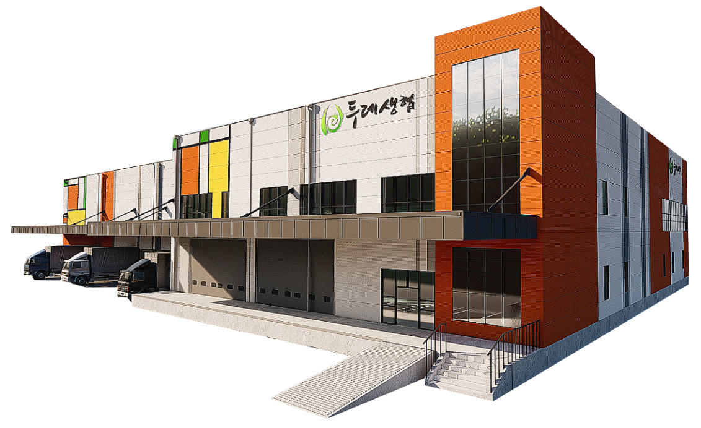
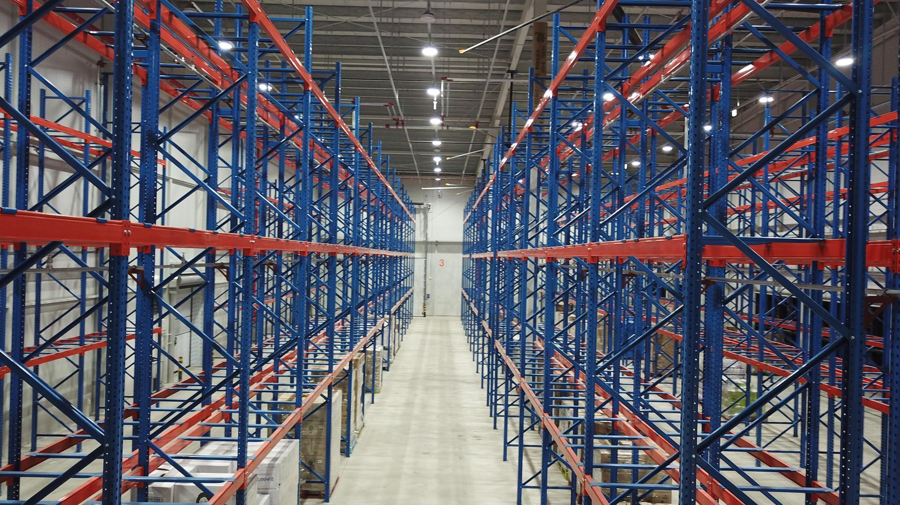
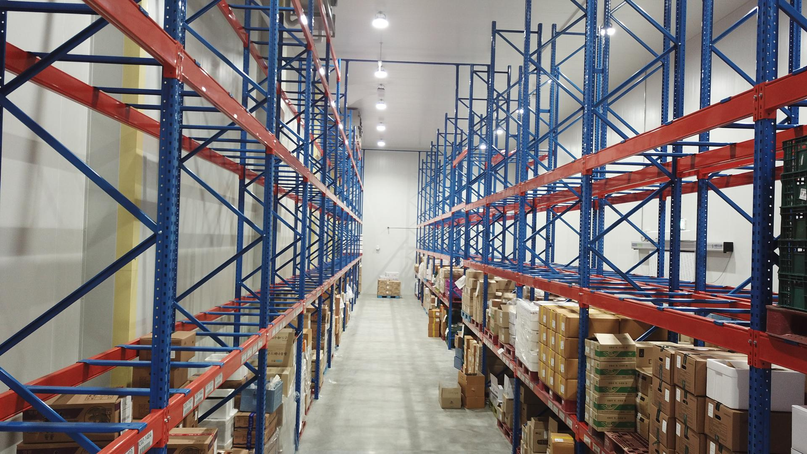
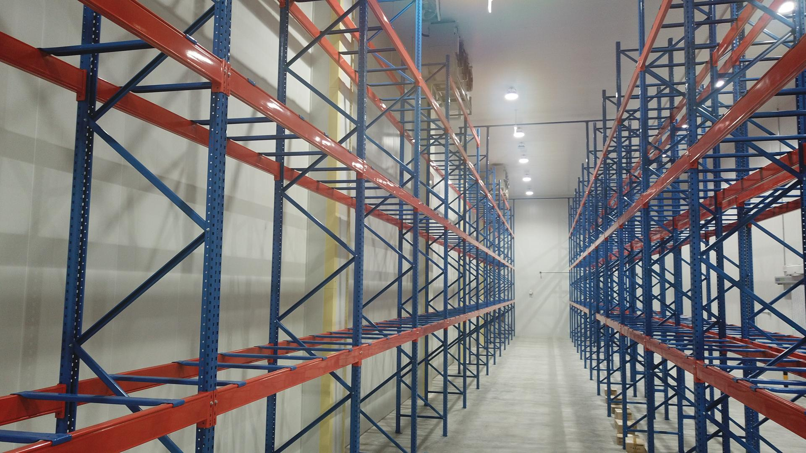
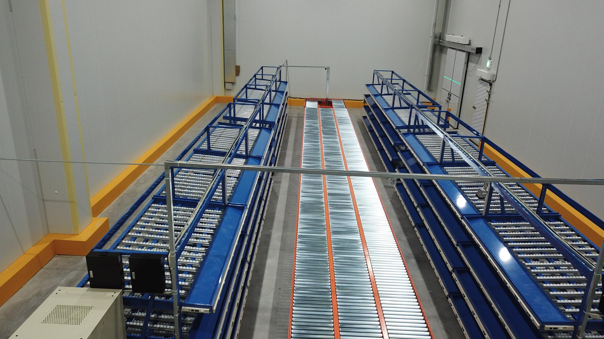

조합원의 건강한 생활재를 정확하고 안전하게 전달하는
두레생협 화성물류센터
경기도 화성시 남양읍 — 2025년 준공
상온·냉장·냉동 통합 물류를 한 곳에서





통로별 수량을 정확히 나누는 허브
스캔하고, 담고, 컨베이어로
인덕션에서 투입된 박스가 컨베이어를 따라
각 분기 구역으로 자동 분류·이송됩니다
매장별 정확한 피킹
개인 조합원 주문, 하나하나 정확히
분류·피킹이 완료된 생활재는
롤테이너에 적재되어 전국 각 점포와
배송센터로 출발합니다.
두레생협 화성물류센터